11.1 Overview
Layer 12 is marked optional in the diagram, but for any agent that can take consequential actions it is mandatory in practice. It provides human review for high-risk actions, expert feedback on outputs, active learning from corrections, continuous improvement and override/escalation paths.
Why human intervention is required:
- Irreversibility. Some actions cannot be undone (payments, emails to customers, production deployments, medical or legal communications). A probabilistic system should not perform them unattended.
- Accountability. Regulations and internal policy often require a named human to be responsible for a decision (EU AI Act human oversight, financial controls, four-eyes principles).
- Uncertainty. When the agent's confidence is low, the evidence is contradictory, or the request is ambiguous, a human resolves it faster and more safely than another reasoning loop.
- Learning. Human corrections are the highest-quality training and evaluation signal available.
11.2 Architecture

Mermaid source diagrams/hitl-flow.mmd
flowchart LR
A[Agent proposes action] --> R{Risk classifier}
R -->|low| X[Auto-execute]
R -->|medium| C[Confidence & policy check]
C -->|pass| X
C -->|fail| Q
R -->|high / irreversible| Q[Approval queue]
Q --> H[Human reviewer]
H -->|approve| X
H -->|edit| X
H -->|reject| N[Agent receives rejection<br/>re-plans]
X --> O[Outcome]
O --> F[Feedback & corrections]
F --> D[(Eval datasets<br/>fine-tuning data)]
D --> I[Continuous improvement]
11.2.1 Human approval
The action executor classifies every tool call by risk tier. write and irreversible calls create an approval request: the run checkpoints and pauses (LangGraph interrupt), an approval event is streamed to the requesting user and, depending on policy, to a reviewer queue (Slack/Teams message with Approve/Reject/Edit, or a web inbox). The reviewer sees the proposed action, arguments, the agent's reasoning and the evidence. On approval the run resumes with the (possibly edited) arguments; on rejection the agent receives the rejection as an observation and re-plans; on timeout the run fails safely.
Policy decides who may approve: the requesting user for their own scope, a manager for larger amounts, a second person for four-eyes actions. Approval decisions are audit events.
11.2.2 High-risk action review
Beyond individual tool calls, some plans deserve review before execution: a plan that will touch dozens of records, contact external parties or exceed a cost threshold. The orchestrator can be configured to pause after planning for such cases (interrupt_after=["plan"] conditioned on plan risk), presenting the plan for approval or editing.
11.2.3 Expert feedback
Domain experts rate outputs on rubrics (accuracy, completeness, tone), correct them inline, and annotate failures. The feedback UI is part of the product surface (thumbs, edit-and-resend, "report a problem") and of an internal annotation tool with queues fed by sampling and by low online-evaluation scores.
11.2.4 Active learning
Sampling strategy targets the most informative runs: low judge scores, low model confidence (where available), guardrail flags, disagreement between judge and user feedback, novel tool combinations. Reviewed runs become labelled examples in evaluation datasets and, when volume permits, fine-tuning data for small specialised models (classifiers, routers, judges).
11.2.5 Continuous improvement
A weekly loop: review failure clusters → update prompts, tools, retrieval or policies → run evaluations → canary → measure. Track improvement on the same metrics used in Observability.
11.2.6 Override and escalation
Users can stop a run, take over a task manually, or escalate to a human agent (support desk, analyst). Operators can pause all runs for a tenant, disable a tool globally (kill switch) or roll back a prompt version, all through configuration changes that take effect without redeploying code.
11.3 Domain examples
| Domain | Agent actions | Human role | Controls |
|---|---|---|---|
| Financial agents | Reconciliation, payment proposals, trade research, refunds | Approve payments over thresholds; four-eyes on transfers; compliance review of client communications | Amount-based approval tiers; segregation of duties; immutable audit; MiFID/SOX evidence |
| Medical agents | Triage summaries, literature search, documentation drafting | Clinician reviews every patient-facing output; approves documentation before it enters the record | No autonomous diagnosis or prescribing; output guardrails with medical policy; provenance for every claim |
| Enterprise automation | Ticket resolution, access provisioning, report generation, CRM updates | Approve access grants and customer-visible changes; review sampled resolutions | Risk tiers per tool; delegated identity; rollback for provisioning; feedback on resolutions |
| Software engineering agents | Code changes, test runs, deployments | Review pull requests; approve production deploys | Sandboxed execution; PR-based workflow; CI gates; no direct production credentials |
11.4 Implementation guide
- Model approvals as first-class entities (
approval_id, run, tool, arguments, requester, approver, decision, timestamps, reason) in PostgreSQL. - Deliver approval requests through the channel the user is in (web card, Slack Block Kit message with actions, Teams Adaptive Card) and to a central inbox for reviewers.
- Set timeouts and escalation (unanswered in 4 hours → escalate to backup approver; 24 hours → cancel).
- Make the reviewer's job easy: show the diff of what will change, the evidence, cost so far, and a one-click edit of arguments.
- Store feedback with the exact prompt, model and tool versions so it can be attributed and replayed.
- Never let the agent approve its own actions, and never let approval be inferred from a prompt.
11.5 Example implementation
Approval request and resume with LangGraph:
from langgraph.types import interrupt, Command
# inside the executor node
decision = interrupt({"type": "approval", "tool": name, "arguments": arguments,
"reason": reasoning, "cost_so_far": state["cost"]})
if not decision["approved"]:
return {"results": {task_id: {"status": "rejected", "reason": decision.get("reason")}}}
# API endpoint called when the reviewer clicks Approve
await graph.ainvoke(Command(resume={"approved": True, "arguments": edited_args, "approver": user.sub}),
config={"configurable": {"thread_id": run_id}})
Slack approval card (Block Kit excerpt):
{ "blocks": [
{ "type": "section", "text": { "type": "mrkdwn",
"text": "*Approval required*: `send_email` to *cfo@acme.com*\nSubject: Q3 competitor analysis\nEstimated cost so far: $0.48" } },
{ "type": "actions", "elements": [
{ "type": "button", "text": { "type": "plain_text", "text": "Approve" }, "style": "primary", "value": "apr_01J…:approve" },
{ "type": "button", "text": { "type": "plain_text", "text": "Reject" }, "style": "danger", "value": "apr_01J…:reject" } ] } ] }
11.6 Best practices
- Common mistakes. Approval fatigue from over-tiering reads; approvals with no context; letting the run time out silently; collecting feedback that is never used.
- Optimisation. Tier by real consequence, not by tool name; batch low-risk approvals; pre-approve templated actions within limits.
- Security. Approver identity from the IdP, not from the chat; four-eyes for the highest tier; approvals recorded immutably; kill switches tested regularly.